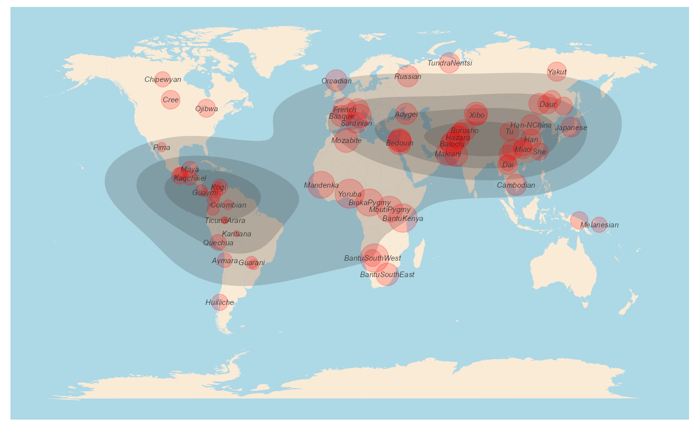

dDivgeomap.RdThe density of biodiversity in geographic map.
dDivgeomap(data, x, y, label, border_colour = NA, border_fill = "antiquewhite", density_alpha = I(0.2), density_fill, density_size = 1, bins = 5, geom = "polygon", point_color = "red", pointalpha = 0.2, pointsize, ...)
| data | A data frame contains the longitute, latitude, and diversities of each location. |
|---|---|
| x | The longitude of the sampling location |
| y | The latitude of the sampling location |
| label | The locations(sites or population) that will be ploted |
| border_colour | The colour of the border of geographic map |
| border_fill | Geographic map border |
| density_alpha | The density plot argument passing to stat_density_2d |
| density_fill | The density plot argument passing to stat_density_2d |
| density_size | The density plot argument passing to stat_density_2d |
| bins | The density plot argument passing to stat_density_2d |
| geom | The density plot argument passing to stat_density_2d |
| point_color | The diversity point color |
| pointalpha | The diversity ponit parameter passing to geom_point() |
| pointsize | The point size used to indicate the (relative) size of diversity values |
| ... | other arguments passing to ggplot. |
There are four ways of plotting geographic map in this package. "dDiversity" uses ggplot2.
A density and diversity map in a world map
Wickham, H. (2011). ggplot2. Wiley Interdisciplinary Reviews: Computational Statistics, 3(2), 180-185.
Qin, X. (2019). HierDpart: partitioning hierarchical diversity and differentiation across metrics and scales, from genes to ecosystems. R package version 0.5. 0 https://cran.r-project.org/package=HierDpart.
qinxinghu@gmail.com
#load data data(Dprofile) ##plot dDivgeomap(Dprofile,x=Dprofile$Longitude, y=Dprofile$Latitude,label=Dprofile$Population, border_colour=NA, border_fill="antiquewhite",density_fill =Dprofile$Dq1, density_alpha = I(.2),density_size = 1, bins = 5, geom = "polygon", point_color="red", pointalpha = .2, pointsize=normalize(Dprofile$Dq1)*10)